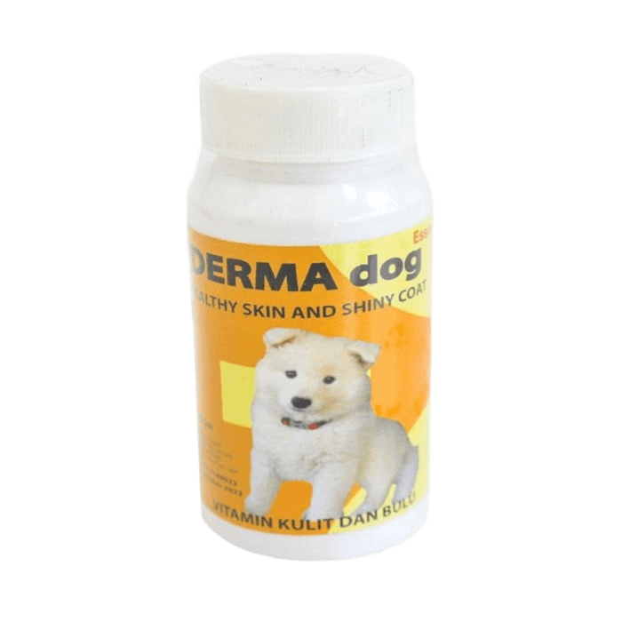

Tindakan Bedah Hewan
Solusi bedah dengan standar medis tinggi dan penuh kasih sayang

Bedah Steril
Prosedur steril yang aman dan profesional untuk hewan kesayangan

Perawatan Pasca Bedah
Pemulihan optimal dengan perawatan intensif dan monitoring ketat

Pemulihan Lengkap
Hewan sehat kembali dengan perawatan pasca bedah yang tepat
Layanan Tindakan Bedah Hewan
Solusi bedah hewan dengan standar medis tinggi dan penuh kasih sayang
Kami menyediakan berbagai tindakan bedah untuk hewan peliharaan, mulai dari operasi minor hingga mayor, dengan dukungan dokter hewan berpengalaman dan fasilitas lengkap. Setiap prosedur dilakukan dengan mengutamakan keselamatan, kenyamanan, dan pemulihan optimal bagi hewan Anda.
- Bedah steril (spay/neuter)
- Bedah tumor & benjolan
- Operasi ortopedi & patah tulang
- Bedah darurat & trauma
- Bedah gigi & mulut
- Perawatan luka & abses
Konsultasikan kebutuhan bedah hewan Anda bersama tim Artelin Petcare untuk solusi terbaik.
Galeri Tindakan Bedah
Beberapa dokumentasi tindakan bedah di klinik kami
Bedah pengangkatan tumor pada anjing
Proses steril kucing betina
Operasi ortopedi & perawatan pasca bedah
Bedah darurat & pemulihan bersama majikan
 Instagram
Instagram WhatsApp
WhatsApp